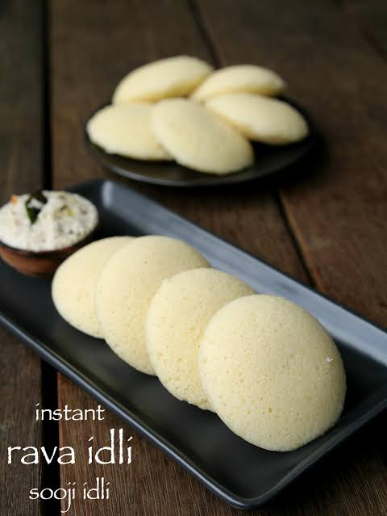

This is How you make Idli kids
Pour water into the bottom of your steamer pot or pressure cooker (without the weight/whistle) and bring it to a boil over medium-high heat. Meanwhile, grease the idli mold plates lightly with a drop of oil or ghee.
Give your room-temperature batter a gentle stir (do not over-mix, or you will lose the air pockets that make it fluffy). Pour the batter into each greased mold, filling them about 3/4 of the way up to leave room for the idlis to expand.
Place the filled idli stand into the boiling steamer. Cover the lid tightly. Cook on medium-high heat for 10 to 12 minutes. Turn off the heat and let the steamer sit unopened for 2–3 minutes. Open the lid, let the steam escape, and scoop out the hot, fluffy idlis using a wet spoon.